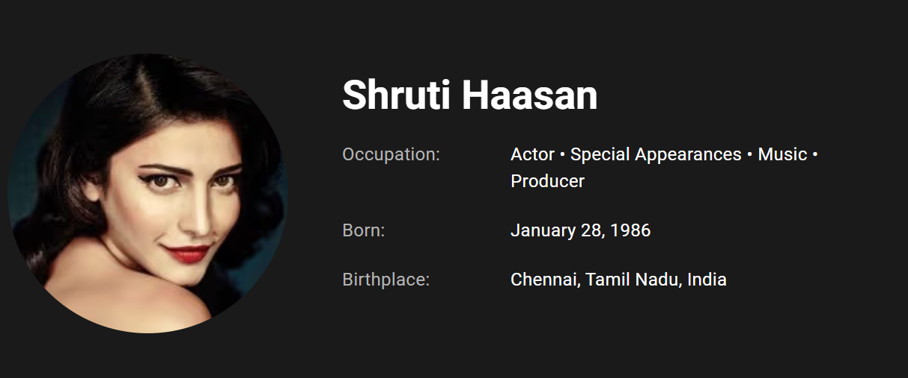

|  |
|---|
| Song:A-Life-Full-Of-Love-theme music............... | |
| Song:come on girls | |
| Song:One-Life | |
| Song:Kalanguthe kangal | |
| Song:Kannazhaga-the kiss of love | |
| Song:Naadodi mannan | |
| Song:Nee partha vizhigal | |
| Song:poo-nee-poo-the pain of love | |
| Song:A-life-full-of-love | |
| Song:why this kolaveri di |